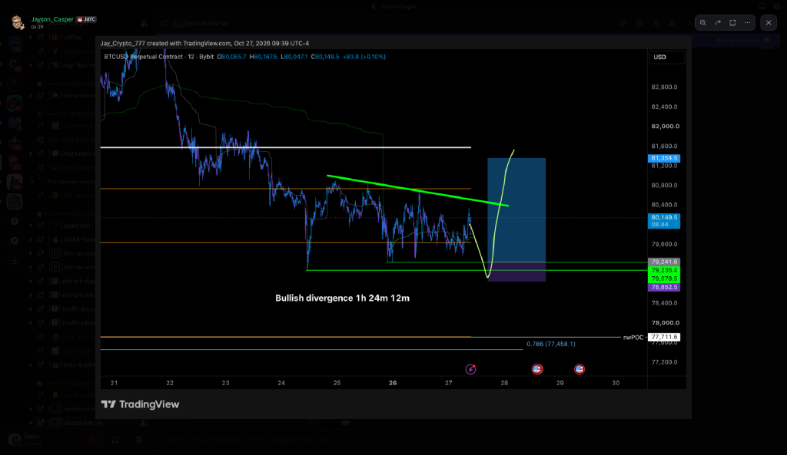
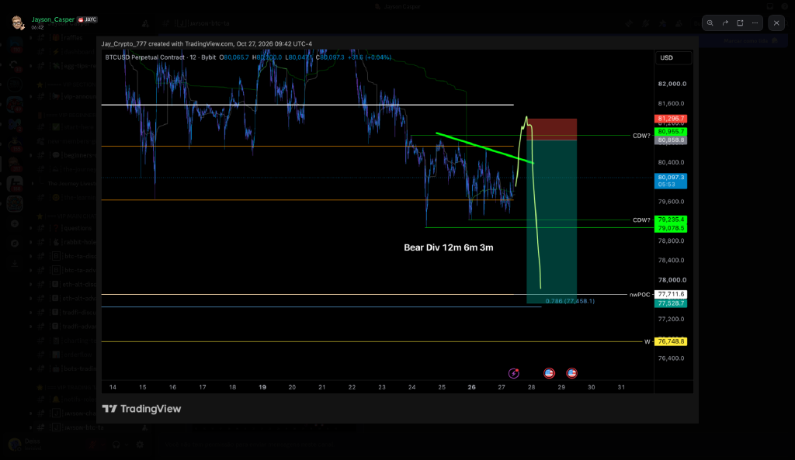
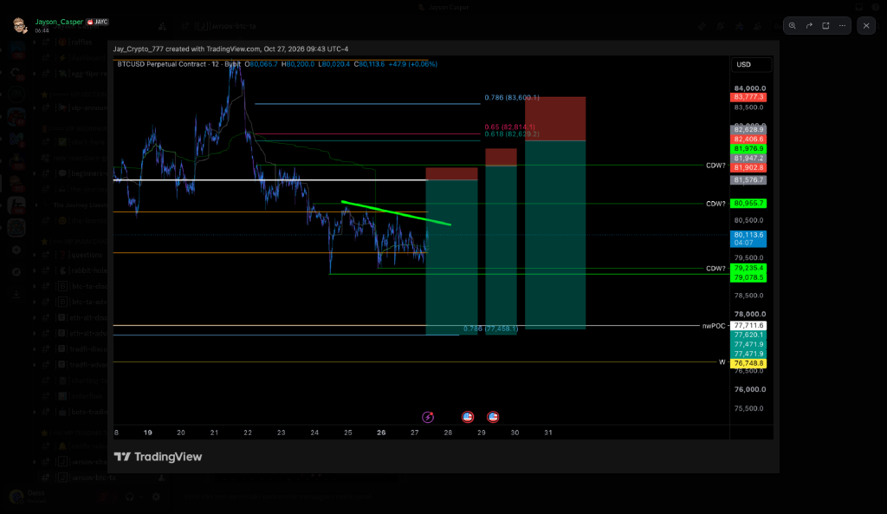
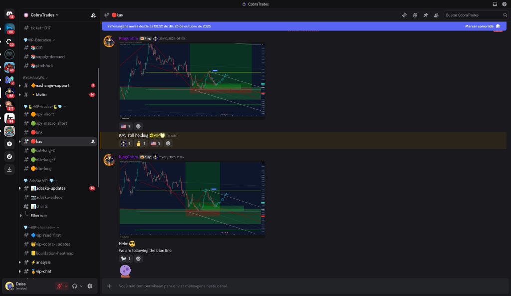

Trades VIP do Cobra. A cor da bolinha no nome do canal mostra o estado do trade. Desde ontem às 19h só uma bolinha mudou: o kas passou de 🟢 para 🔴 (estopou na entrada). Sem canal novo e sem trade novo com níveis.
Sem post novo. Stop na entrada 1,3801, alvo 1,1691. XRP ~1,315, ~4,7% a favor; trade sem risco. Range deviation (Central Command, ~12h44): 1h neutro e o preço CRUZOU a fita para cima depois da zona azul (gatilho de alta); 4h AZUL até a última vela fechada, com a vela atual passando o topo da fita (não confirmado). Contra o short: o gatilho de alta no 1h pede cuidado, mas com o stop na entrada o risco é zero.
Encerrado em 21/10 (estopado). Canal não aparece mais.
Ordem limite retirada pelo Cobra em 24/10 (canal 🔴link). Sem post novo. LINK ~11,38. O alerta antigo COBRA LINK 11,31 perdeu o sentido.
O AAVE caiu até 129,51 hoje às 07h, abaixo da entrada 129,94, então a ordem foi executada SE ainda existia (o canal do AAVE não aparece mais na categoria, sem confirmação do Cobra). AAVE ~131,1, +0,9% acima da entrada; stop ≈112,41 longe (~13%). Pelas regras do relatório vai contra o 4h e o 1D caindo, com baixa oculta confirmada no 12h (21/10); no 12h há divergência de alta formando (não confirmada). Range deviation (Central Command, ~12h32): 1h AZUL, no fundo da fita, sem gatilho; 4h neutro, bem abaixo da fita. A zona azul apoia procurar long, mas falta o preço cruzar a fita para cima.
O canal do QNT não aparece na categoria. Scalp de 19/10 em 189,46, sem stop/alvo postados. QNT ~197,7 (máx. 24h 213,2), recuou do pico mas segue ~4,3% acima da entrada. Range deviation (Central Command, ~12h37): 1h neutro depois de um pico vermelho na madrugada de hoje; o preço caiu de ~207 para dentro da fita (movimento de baixa parcial, incerto); 4h neutro, dentro da fita comprimida. Depois da zona vermelha o preço está devolvendo; realizar parte continua fazendo sentido.
Plano de 24/10 (canal 🟠btc-long): entrada 1 em 78.590 e entrada 2 em 78.247, metade em cada; SL 76.401, TP1 80.500, TP2 89.000. BTC ~80.290; entrada 1 a -2,1% (mínima 24h 79.506, não acionou). NOVO no vip-cobra-updates 00h03: "acho que vemos 78k a qualquer momento" e que isso deve puxar o ETH junto, o que combina com esse plano de compra. Pelas regras do relatório vai contra o 1D (divergência de baixa confirmada antiga), mas há divergência de alta FORMANDO (não confirmada) no 4h, 12h e 1D. Alertas COBRA 78.590 e 78.247 já existem. Range deviation (Central Command, ~12h35): 1h AZUL (esticado para baixo), preço na borda de baixo da fita, sem gatilho; 4h neutro, abaixo da fita, sem gatilho. Apoia procurar long como zona, sem confirmação.
Sem post novo. Entrada 99,77, SL 98,58, TP1 105,7. SOL ~100,5 (mínima 24h 99,16, stop intacto), +0,7% a favor. Contra o 1D e com baixa oculta confirmada no 4h (26/10); alta formando no 12h e 1D. Range deviation (Central Command, ~12h40): 1h AZUL, preço encostando no topo da fita (gatilho de alta se formando, incerto); 4h AZUL, no fundo da fita, sem gatilho. Apoia o long como zona, com gatilho só se formando.
Sem post novo desde 24/10. O ETH caiu até 2.282,5 em 24/10, abaixo do stop na entrada 2.317, então o long original deve ter saído no 0 a 0 (canal ainda 🟢). ETH ~2.331. O Cobra avisou hoje 00h03 que uma queda do BTC a 78k deve puxar o ETH. Range deviation (Central Command, ~12h30): 1h AZUL, preço no fundo da fita com possível cruzamento para cima começando (incerto); 4h AZUL, abaixo da fita, sem gatilho. Apoia long como zona, sem confirmação.
Encerrado em 22/10 (estopou no 0 a 0). Canal não aparece mais.
NOVO 27/10 01h57: o canal virou 🔴kas. Cobra: "fui estopado na entrada, bom trade no geral", e que o alvo teria sido a entrada perfeita de short. Já tinha realizado ~15% antes; o resto saiu no 0 a 0. KAS ~0,0350 (Gate).
Ordem antiga (13/08), sem atualização. Canal agora 🟠spy-short. Range deviation: n/d (índice não lido).
Sem atualização desde 17/09. Continua 🟢. Canal agora 🟢spy-macro-short. Range deviation: n/d (índice não lido).
Sem post novo sobre o APT desde 26/10 04h10 ("quero aumentar o APT"). Zonas de 21/10: compra ≈0,52–0,63, recarga ≈0,70–0,78, realização ≈0,88–0,99. APT ~0,680, caiu abaixo da zona de recarga. Range deviation (Central Command, ~12h43): 1h AZUL, no fundo da fita, sem gatilho; 4h neutro, abaixo da fita. Apoia comprar aos poucos como zona, sem confirmação.
Os canais aster-short e sol-short do Adaśko não aparecem mais na categoria (só adaśko-updates, vídeos e charts). Ordem de 05/09; não dá para saber se foi cancelada. ASTER ~0,711. Range deviation: n/d (não lido).
O canal não aparece mais na categoria do Adaśko. Ordem de 25/09; não dá para saber se foi cancelada. SOL ~100,5, entrada ~32% acima. Range deviation: SOL 1h e 4h AZUIS, contra um short.
BTC perpétuo na Bybit. Valores com ≈ foram lidos das etiquetas do gráfico. O Jayson voltou a postar hoje (06:38–06:48) depois de 4 dias: 1 long e 4 shorts para o dia, mais um vídeo ("Divergência de alta 4h 1h 24m 12m", não assistido). Ele disse que segue olhando o mesmo cenário da segunda passada.
"Também me interessam os trades de hoje". Entrada ≈79.241–79.235, stop na zona roxa ≈79.078–78.852, alvo no topo da caixa ≈81.354 (o caminho desenhado vai mais alto). Não acionado (mínima desde 06h 79.506). Vai contra o 1D (baixa), mas a divergência de alta está FORMANDO (não confirmada) no 4h, 12h e 1D. Range deviation (Central Command, ~12h35): 1h AZUL (esticado para baixo), preço na borda de baixo da fita, sem gatilho; 4h neutro, abaixo da fita, sem gatilho. Zona azul no 1h apoia o long; falta o gatilho.
"Short 1 hoje". Entrada ≈80.955 (nível CDW), stop no topo da zona vermelha ≈81.297, alvo no fundo da caixa verde ≈77.529 (perto do nwPOC ≈77.711). Não acionado (máxima desde 06h 80.497); entrada +0,8% acima. A favor do 1D (divergência de baixa confirmada antiga). Range deviation (Central Command, ~12h35): 1h AZUL (esticado para baixo), preço na borda de baixo da fita, sem gatilho; 4h neutro, abaixo da fita, sem gatilho. Contra o short agora: não vender esticado para baixo; só se o preço subir até a entrada.
"3 outros shorts que me interessam hoje". Lido do gráfico: entrada ≈81.577, stop ≈81.903, alvo ≈77.620–77.472. Os pares entrada/stop das 3 caixas foram lidos pela posição no gráfico, então trate como aproximados. A favor do 1D. Range deviation (Central Command, ~12h35): 1h AZUL (esticado para baixo), preço na borda de baixo da fita, sem gatilho; 4h neutro, abaixo da fita, sem gatilho.
Entrada ≈81.947–81.977, stop ≈82.407, alvo ≈77.620–77.472. A favor do 1D; Range deviation do BTC azul no 1h, contra vender agora.
Entrada no 0,618 ≈82.629 (0,65 em ≈82.814), stop ≈83.777, alvo ≈77.620–77.472. Perto do Short 1 do VWAP (≈82.300) de 22/10. A favor do 1D; Range deviation do BTC azul no 1h, contra vender agora.
Sem post novo do Jayson desde 23/10 10h25. O stop ≈80,6k foi atingido em 23/10 (BTC caiu até 79.833), então esse long deve ter sido estopado; ele não confirmou. As próximas áreas que ele citou são os longs ≈79.656 e ≈77.743.
Parcial realizada em 22/10 (≈81,9k); segura o resto até 50k. BTC ~80.290, ~4,8% a favor. A favor do 1D (Baixa ✓). Range deviation (Central Command, ~12h35): 1h AZUL (esticado para baixo), preço na borda de baixo da fita, sem gatilho; 4h neutro, abaixo da fita, sem gatilho.
Entrada ≈82.300 não acionada; BTC ~80.290, entrada +1,9% acima. A favor do 1D. Alerta JAYSON 82.300 já existe. Range deviation (Central Command, ~12h35): 1h AZUL (esticado para baixo), preço na borda de baixo da fita, sem gatilho; 4h neutro, abaixo da fita, sem gatilho.
Entrada ≈83.200, stop ≈84.360, alvo ≈76.050. Entrada +3,0% acima. A favor do 1D. Alerta JAYSON 83.200 já existe. Range deviation (Central Command, ~12h35): 1h AZUL (esticado para baixo), preço na borda de baixo da fita, sem gatilho; 4h neutro, abaixo da fita, sem gatilho.
Entrada ≈84.300–84.670, stop ≈85.830, alvo ≈79.700. A favor do 1D. Alerta JAYSON 84.300 já existe. Range deviation (Central Command, ~12h35): 1h AZUL (esticado para baixo), preço na borda de baixo da fita, sem gatilho; 4h neutro, abaixo da fita, sem gatilho.
Ele entrou a mercado às 16:01 de 21/10 nessa região; o BTC caiu até 81.376 (alvo ≈79.641 ainda não). Substituído pelo Short 3 revalidado de hoje (stop ≈85.830).
Ele entrou a mercado às 16:01 de 21/10 nessa região; o BTC caiu até 81.376 (alvo ≈79.641 ainda não). Substituído pelo Short 3 revalidado de hoje (stop ≈85.830).
Entrada ≈87.500, stop ≈90.034, alvo ≈69.262. Entrada +8,3% acima. A favor do 1D. Alerta JAYSON 87.500 já existe. Range deviation (Central Command, ~12h35): 1h AZUL (esticado para baixo), preço na borda de baixo da fita, sem gatilho; 4h neutro, abaixo da fita, sem gatilho.
Scalp com divergência de alta no 3m e 1m. Entrada ≈83.045 e stop ≈82.696 lidos do gráfico; alvo 84.225 escrito no post (o gráfico mostra ≈84.365). O BTC chegou a 84.225 às ~11h35, então o alvo foi batido. Sem alerta (já resolvido). Ele também postou um link de gráfico ao vivo às 10:32, sem níveis.
Antigo; a entrada ≈84.218 foi tocada em 21/10 e o BTC caiu depois, mas ele não entrou nesse nível. Substituído pelos shorts de 21–22/10.
O alvo ≈84.356 foi batido em 21/10 às ~11h45 (máxima 84.798). A zona de entrada foi tocada em 19/10 sem bater o stop; não dá para saber se ele entrou (pedia divergência de alta no 12m/6m/3m).
O BTC passou pela entrada ≈79.656 ontem (mínima 79.221) sem bater o stop ≈78.937 e está em ~80.793 (+1,4%). Ele não confirmou se entrou. Alvo ≈86.718. Contra o 1D (Baixa ✓). Range deviation (Central Command, ~12h35): 1h AZUL (esticado para baixo), preço na borda de baixo da fita, sem gatilho; 4h neutro, abaixo da fita, sem gatilho.
Segunda área de interesse do Jayson. Entrada ≈77.743, stop ≈75.185, alvo ≈86.821. BTC ~80.290, entrada -3,8% abaixo. Contra o 1D. Alerta JAYSON ≈77.743 já existe. Range deviation (Central Command, ~12h35): 1h AZUL (esticado para baixo), preço na borda de baixo da fita, sem gatilho; 4h neutro, abaixo da fita, sem gatilho.
Sem post novo; substituído pelo short swing de 21/10 (≈87.500). BTC ~81,9k.
Sem post sobre esse long (80.250, de 15/10). BTC ~80.290, ~0,7% acima da entrada; stop ≈77.500 não foi batido. Não dá para saber se segue aberto. Range deviation (Central Command, ~12h35): 1h AZUL (esticado para baixo), preço na borda de baixo da fita, sem gatilho; 4h neutro, abaixo da fita, sem gatilho.
Zona onde ele entrou (80.250).
Front-runado; sem mudança.
Plano antigo; o BTC passou por 84.300 em 21/10 e caiu depois (mínima 79.833 hoje).
Histórico; encerrado em 12/10.

Jayson 27/10 06:39 – long da divergência de alta (entrada ≈79.235, stop ≈78.852, alvo ≈81.354)

Jayson 27/10 06:42 – Short 1 de hoje (entrada ≈80.955, stop ≈81.297, alvo ≈77.529)

Jayson 27/10 06:44 – 3 shorts extras (entradas ≈81.577 / 81.960 / 82.629)

Cobra 27/10 07:02 – BTC com open interest subindo forte